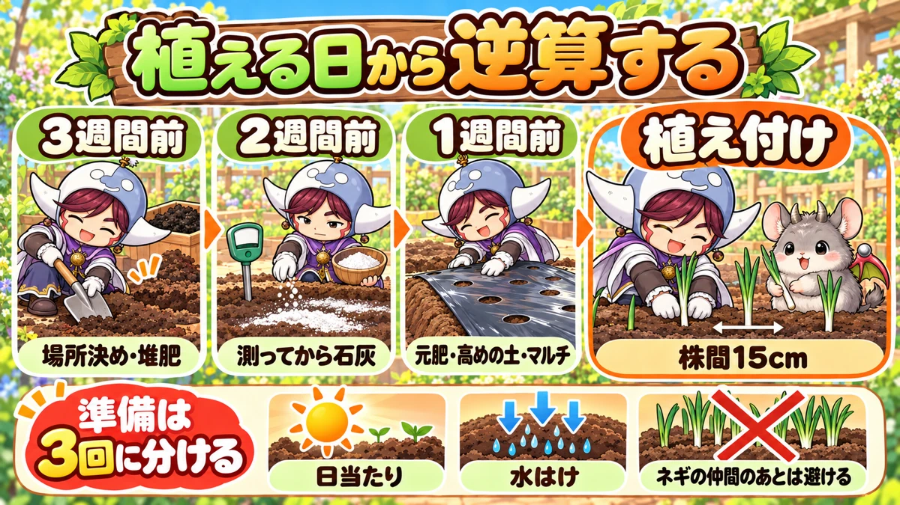
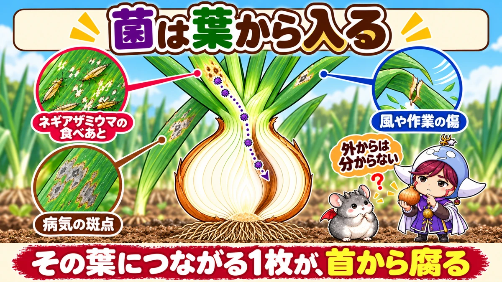
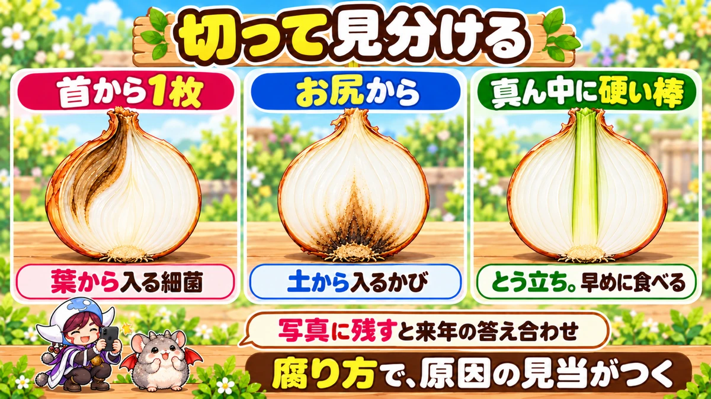
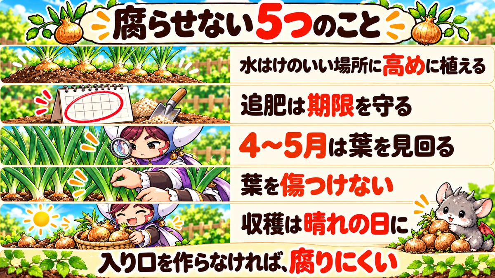

玉ねぎの植えつけ準備と「芯が腐る」原因｜いつ・何をするかの逆算表、内側の1枚が腐るしくみ、切り口での見分け方と防ぎ方
この記事で分かること
- 玉ねぎの植えつけ準備は、植える日を先に決めて、3週間前・2週間前・1週間前の3回に分けると迷いません。
- 3週間前は場所選びと堆肥、2週間前は土の酸度を測って足りなければ石灰、1週間前は元肥・うね立て・マルチ張りです。
- 収穫した玉ねぎの「芯のほうが腐る」症状の多くは、育てている途中に葉の傷から入った細菌が、その葉につながる内側の1枚を、首からお尻の方向へ腐らせるものです。外から見ても分かりません。
- 菌の入り口になるのは、ネギアザミウマという小さな虫の吸いあと、べと病などの病気の斑点、強い風や作業でついた傷です。県の試験では、虫やべと病が多い畑ほど、保存中に腐る玉がはっきり増えました。
- 追肥が遅れたり窒素が多すぎたりして玉が太りすぎると、腐りやすさが上がります。
- 腐り方は「首から内側の1枚」「お尻から」「真ん中に硬い棒」の3つで原因の見当がつきます。
この記事は、読者の方からいただいた「玉ねぎを植える準備はいつ頃、どのようにすればいい？」「収穫のとき、芯のほうが腐ったものができるのはなぜ？」という2つの質問に答えるつもりで書きました。この2つは、別々の話に見えて、実はつながっています。腐りにくい玉ねぎにできるかどうかの半分は、植える前の準備で決まるからです。
苗の選び方、植える深さ、冬越し、収穫と吊るし方まで、玉ねぎ全体の流れは「玉ねぎの育て方」にまとめています。この記事では、その中から「植える前の準備」と「内側が腐る原因」の2つだけを、深く掘り下げます。
この記事の読み方
これから植える方は、「早見」と「準備の手順」を先に読んでください。今年すでに植えた方や、去年腐らせてしまった方は、「芯が腐るしくみ」から読んでも大丈夫です。どちらから読んでも分かるように書いています。
※時期はすべて中間地（関東から関西の平野部）の目安です。寒い地域は早め、暖かい地域は遅めにずらし、苗の札や種苗店の案内もあわせて見てください。
📖 この記事の目次
早見：玉ねぎの植えつけ準備と腐らせないための数字

基本の情報
- なかま：ヒガンバナ科（ネギ・ニンニク・らっきょうと同じなかま）
- 連作の目安：同じ場所は1〜2年あける。ネギのなかまのあとも避ける
- 植えつけ：11月中。早生（わせ）は11月中旬まで、中生・晩生（なかて・おくて）は11月いっぱい
- 収穫：中生・晩生は翌年の5月末〜6月
- 株間：15cm（穴あきマルチの穴に1本ずつ）
準備の逆算
- 3週間前：場所を決める／前の作物の根を片づける／堆肥を入れて耕す
- 2週間前：土の酸度を測る／酸性に傾いていれば苦土石灰（1平方メートルに100gが目安）
- 1週間前：元肥を入れる／うねを立てる（高さ10〜15cm、水はけが悪ければもっと高く）／穴あきマルチを張る
- 当日：苗を植える（白い部分が1〜1.5cm埋まる深さ）
元肥の目安（1平方メートルあたり）
- 牛ふん堆肥：3L
- 鶏ふん：200cc
- 油かす：100cc
葉物より多めですが、半年以上畑にいる玉ねぎには、これくらいがちょうどいい量です。
追肥をやめる時期
- 有機の肥料：1月末まで
- 化成肥料：3月のはじめまで
この期限を過ぎて追肥すると、玉が太らないだけでなく、保存中に腐りやすくなります（理由は後ろの章で）。
腐りやすい時期
- 菌が入りやすいのは、葉がいちばん茂ってから、倒れはじめるころまで
- 秋植えの中間地なら、だいたい4〜5月にあたる
- 症状が見えてくるのは、収穫のころから保存中
なぜ準備を3回に分けるのか
全部を1日でやってしまいたくなる気持ち、分かります。でも、準備を3回に分けるのには、それぞれ理由があります。
- 石灰と肥料を同時に入れると、肥料の中の窒素がガスになって逃げやすくなります。石灰を先に入れて、土となじませてから肥料を入れるほうが、むだがありません。
- 鶏ふんや油かすは、土の中で微生物に分解されるときに、ガスや熱を出します。植えたばかりの根がこれにふれると傷むので、肥料を入れてから植えるまで1週間ほどあけます。
- 場所選びは、いちばん後から変えられない作業です。マルチを張ったあとで「ここ、水たまりができる場所やった」と気づいても、もう遅い。だから最初にやります。
逆にいえば、この3つの理由さえ分かっていれば、日にちは多少前後しても大丈夫です。仕事の都合で週末しか畑に行けない方は、「3週目の週末・2週目の週末・1週目の週末」と3回の週末に割り振ると、無理なく進められます。
準備の手順（時期の順）
手順1：植える日を決める（4週間前まで）
- 苗が店に並ぶのは、10月の終わりから11月にかけてです。予約できる店なら、予約しておくと安心です。
- カレンダーに、植える日を1日書き込みます。中生・晩生なら、11月の中旬から下旬の週末が目安です。
- そこから3週間・2週間・1週間戻った日に、それぞれ「場所と堆肥」「酸度と石灰」「元肥・うね・マルチ」と書いておきます。
これだけで、準備の段取りはほとんど終わったようなものです。
手順2：場所を決めて、堆肥を入れる（3週間前）
- 日当たりのよい場所を選びます。玉ねぎは冬のあいだも葉で光合成をしているので、冬に日が当たる場所かどうかが大事です。
- 雨のあとに水たまりがなかなか引かない場所は避けます。玉ねぎは湿りけが続くと根も玉も傷みやすく、腐る病気の菌も増えやすくなります。
- ここ1〜2年、ネギのなかま（ネギ・ニンニク・らっきょう・玉ねぎ・にら）を育てた場所も避けます。玉を腐らせる菌は、土の中に残るからです。北海道の試験場の調べでも、内側のりん片が腐る病気の伝染源として、土が重要だとされています。
- 前の作物の根や茎、枯れ葉を片づけます。病気の出た株の残りは、畑に埋めずに外へ持ち出します。
- 堆肥を入れて、深さ20〜30cmくらいまでよく耕します。
手順3：酸度を測って、必要なら石灰（2週間前）
- 土の酸度（酸っぱさ）を測ります。土にさして測る酸度計か、水に土をとかして色で見る検査キットで十分です。
- 玉ねぎは酸性の土が苦手です。測って酸性に傾いていたら、苦土石灰をまきます。目安は1平方メートルに100gです。
- まいたら、土とよく混ぜます。表面にのせただけでは効きません。
- 酸度が足りていたら、石灰はまきません。
毎年なんとなく石灰をまいていると、知らないうちにアルカリ性に傾いていることがあります。アルカリ性になりすぎると、今度は鉄やマンガンなどが吸えなくなります。石灰は「測ってから」が基本です。測り方と石灰の種類の違いは「土の酸度と石灰の使い方」に詳しく書いています。
手順4：元肥・うね・マルチ（1週間前）
- 早見の量の元肥（牛ふん堆肥・鶏ふん・油かす）を、うねにする部分にまいて、土とよく混ぜます。
- うねを立てます。高さは10〜15cmが目安です。粘土質の畑や、雨のあとに水が残りやすい畑は、20cmくらいまで高くすると安心です。
- うねの表面を平らにならします。でこぼこがあると、低いところに水がたまります。
- 穴あきマルチ（穴の間隔15cm）を張ります。土が少し湿っている日に張ると、その水分を閉じこめられます。からからに乾いている日は、先に水をまいてから張ります。
- マルチのすそに土をかけて、風であおられないように押さえます。
マルチには、雑草を減らすほかに、冬の霜柱で苗が持ち上がるのを防ぐ役目があります。穴の間隔がそのまま株間になるので、株間をはかる手間もいりません。
手順5：植える（当日）
- 苗の白い部分が1〜1.5cm埋まる深さに植えます。
- 株元を指で押さえて、根と土を密着させます。
- 植えたあとは、たっぷり水をやります。その後は、雨がしばらく降らないときに水をやる程度で十分です。
苗の太さの選び方と、根がまっすぐ下を向く植え方は「玉ねぎの育て方」に書いています。
準備が間に合わないときの3つの選択肢
- 苗を先に買ってしまった：畑の隅に、根の白い部分だけ土に埋めておく（仮植え）。苗を傷めずに待てます
- 石灰をまく時間がない：酸度を測って足りているなら、石灰は飛ばしてかまいません。足りないときは、植えつけを少し遅らせてでも先に入れるほうが安心です
- 元肥を入れてすぐ植えたい：鶏ふんや油かすを減らし、よく熟した堆肥を中心にします。肥料が根に直接ふれないようにします
準備で使うものの一覧
買い忘れがないように、3回の作業で使うものを並べておきます。
- 3週間前：スコップかくわ、牛ふん堆肥、片づけたものを入れる袋
- 2週間前：酸度計か酸度の検査キット、苦土石灰（酸性のときだけ）、はかり（100gを量るため。計量カップでも代わりになります）
- 1週間前：鶏ふん、油かす、レーキ（土をならす道具）、穴あきマルチ（穴の間隔15cm）、マルチを押さえるピンか土
- 当日：玉ねぎの苗、割りばし1本（苗の太さを比べたり、植え穴をあけたりするのに使います）、じょうろ
芯が腐るしくみ：菌は葉から入って、首から1枚ずつ腐らせる

ここからは、2つ目の質問「収穫のとき、芯のほうが腐ったものができるのはなぜ？」です。
外の皮はきれいで、持った感じも普通。なのに包丁を入れると、内側の1枚、あるいは数枚が、茶色くとろけている。この症状のいちばんの原因は、細菌です。
玉ねぎの1枚1枚は、別々の葉
まず知っておきたいのが、玉ねぎの玉のつくりです。
- 玉ねぎの「玉」は、葉の付け根が養分をためて太ったもの
- 縦に切ると見える層の1枚1枚が、それぞれ1本の葉につながっている
- いちばん下の平たい部分（お尻）が、本当の茎。ここから根が出る
つまり玉ねぎは、何本もの葉の付け根が、外から内へ重なってできています。
傷から入った菌が、その葉の付け根を下りてくる
葉に傷や虫の吸いあと、病気の斑点があると、そこが細菌の入り口になります。入った菌は、その葉の中を下りていき、首を通って、その葉につながっている玉の1枚に入ります。
北海道の試験場が、内側のりん片が腐る病気（りん片腐敗病）の進み方を調べています。それによると、まず葉の付け根あたりに水がしみたような斑点ができて、その葉が枯れます。続いて、枯れた葉につながるりん片が、首の部分からお尻のほうへ向かって、黄褐色から茶褐色に腐っていきます。
外側の皮とは別の層が腐るので、外からはまず分かりません。滋賀県の研究でも、玉の内側のりん片の腐りは外から見分けられず、収穫から出荷までのあいだに選び分けるのが難しい、とされています。
菌が入るのは、収穫よりずっと前
腐っていることに気づくのは収穫の日や保存中ですが、菌が入ったのはもっと前です。
- 農研機構の東北の研究では、収穫後に玉が腐る症状の主な細菌は、育てている途中に感染し、収穫のころから保存中に症状が出てくる、とされています
- 北海道の調べでは、かかりやすさは葉がいちばん茂るころから高まり、葉が倒れる直前から倒れはじめるころがいちばん高く、葉が枯れはじめると感染しにくくなる、とされています
- 多く出る年の条件として、感染する時期に雨が多いことが挙げられています
北海道は春に植えて夏に穫る作り方なので、月は違います。秋に植える中間地に置きかえると、玉が一気に太る4〜5月が、いちばん気をつける時期になります。
菌の入り口は3つ
入り口1：ネギアザミウマの吸いあと
ネギアザミウマは、体長1〜2mmほどの細長い小さな虫です。葉の汁を吸うので、吸われた葉には、かすれたような白い斑点が並びます。
島根県の農業技術センターが、畑のネギアザミウマの数と、収穫後に腐った玉の割合を調べています（収穫から60日後の調査）。
- 葉の上の虫がいちばん多いときで約1,000匹いた畑：腐った玉の割合 70.9%
- 虫が200匹未満だった2つの畑：23.5%と20.0%
- 翌年、殺虫剤をまいた畑：10.0%
- 同じ年、虫が約500匹いた畑：68.8%
虫が多い畑では、収穫した玉のおよそ7割が腐っていたことになります。島根県では、これまで玉ねぎではあまり気にしていなかったこの虫の防除を、栽培の予定に組み入れるようになったそうです。
ネギアザミウマは暖かくなると増えるので、春の見回りで、葉に白いかすり模様が増えていないかを見ます。
入り口2：べと病などの病気の斑点
葉にほかの病気が出ていると、その斑点も細菌の入り口になります。特に影響が大きいのが、春に雨が続くと広がるべと病です。
佐賀県の農業試験研究センターが、べと病の多い場所と少ない場所で、保存中に腐った玉の割合を比べています。
- 2021年：べと病が少ない場所 0.8% → 多い場所 16.8%
- 2023年：べと病が少ない場所 3.0% → 多い場所 48.0%
同じ資料では、ふつうは大きい玉ほど保存中に腐りやすいけれど、べと病が多いと大きくない玉でも腐りやすい、とも書かれています。べと病の見分け方と予防は「べと病対策の決定版」にまとめています。
入り口3：風・雹・作業でついた傷
島根県の病害虫防除所は、玉ねぎの腐敗病・軟腐病の細菌は、主に傷口とほかの病気の斑点から感染する、としています。そのうえで、次のことを呼びかけています。
- 強い風や雹のあとに注意する
- 草取りなどの作業で、玉ねぎに傷をつけない
- 病気の株は早めに抜いて、畑の外へ持ち出す
- 保存中に腐らせないために、収穫は晴れた日に行い、傷をつけない
葉が折れたり裂けたりすると、そこから菌が入ります。株と株のあいだの草取りや追肥は、葉を手でよけながら、そっとやるのが基本です。
腐りやすさを上げてしまう「太らせすぎ」
入り口とは別に、玉そのものを腐りやすくしてしまうのが、肥料の効かせすぎです。
- 滋賀県の資料：晩生品種は、3回目の追肥が遅れると保存中に腐りやすくなる
- JA（岡山）の資料：最後の追肥を3月中旬より後にすると、玉の腐敗につながる。追肥が多すぎると、乾腐病や軟腐病が出やすくなる
- 長崎県の資料：窒素を多く与えると玉が大きくなりすぎ、収穫のときの傷とあわせて、保存性が下がる
- 佐賀県の資料：一般的に、大きい玉ほど保存中の腐りが多い
「春にもうひと押し追肥して、大きくしたい」と思うのは自然なことです。でも、玉ねぎは葉が役目を終えて枯れていくことで、養分を玉に送り切ります。遅い追肥は、この切りかえを遅らせて、葉がいつまでも青く、首が太いままの玉にします。追肥は、有機なら1月末、化成なら3月のはじめで止めましょう。
失敗の見分け方（症状→原因→やること）

腐った玉を見つけたら、捨てる前に縦に半分に切って、断面をスマホで写真に残しておきましょう。どこから腐っているかで原因の見当がつき、来年の対策を決めるときの答え合わせになります。
切ると、首から内側の1枚（数枚）が茶色くとろけている
- 考えられる原因：育てている途中に、葉の傷・虫の吸いあと・病気の斑点から入った細菌
- やること：同じ畑でとれた玉を、首の柔らかさで選び分けます。首を指で押してぶよっとする玉は、吊るさずに先に使います。来年は、春の見回りとネギアザミウマ・べと病の対策を強めます
お尻（根の出る平たい部分）のほうから腐っている
- 考えられる原因：土から入るかびの病気（乾腐病など）
- やること：腐った玉は畑に戻さず処分します。来年は場所を変え、水はけをよくします。愛知県の資料では、吊るして保存するときは風通しのよいところで早めに乾かすことが挙げられています
真ん中に硬い棒のような芯が通っている
- 考えられる原因：腐りではなく、とう立ち（ネギ坊主の茎が中を通っている）
- やること：保存がきかないので、早めに食べます。原因は、大きすぎる苗のまま冬に入ったことです。来年は苗の太さを見直します
収穫してしばらくは平気だったのに、吊るしているあいだに次々腐る
- 考えられる原因：収穫前に入っていた菌が、保存中に症状を出した。腐った玉から隣へ移った
- やること：ときどき吊るした玉を見上げて、柔らかい玉・においのする玉を外します。べと病が多かった年の玉は、保存用にせず早めに使います
葉が倒れる前に、株元からとろけて嫌なにおいがする
- 考えられる原因：軟腐病（細菌）。春に気温が上がって雨が続くころに出やすい
- やること：その株は早めに抜いて、畑の外へ持ち出します。まわりの株の葉を傷つけないように作業します
準備でよくある失敗（症状→原因→やること）
芯腐れの話とは別に、植える前後の準備でつまずきやすいところもまとめておきます。
植えて1〜2週間のうちに、しおれて倒れる苗がいくつも出る
- 考えられる原因：元肥を入れてすぐに植えて、肥料が分解されるときのガスで根が傷んだ／植える深さが浅すぎた、または深すぎた
- 知っておきたいこと：玉ねぎは、どれだけ丁寧に植えても、植えて1週間ほどで倒れる株がいくつか出ます。何本か倒れただけなら、失敗ではありません
- やること：仮植えしておいた予備の苗で、空いた穴に植え直します。来年は、元肥から植えつけまで1週間あけます
冬に苗が持ち上がって、根が見えている
- 考えられる原因：霜柱で土ごと持ち上げられた。マルチを張っていない場所で起きやすい
- やること：見つけたら、株元を指で押さえて土に戻します。根が浮いたままだと枯れてしまいます。来年はマルチを張ります
雨のあと、いつまでもうねのまわりに水が残る
- 考えられる原因：うねが低い／粘土質で水がしみこみにくい／畑の端が低くなっていて水が集まる
- やること：うねのまわりの通路に浅い溝を掘って、水の逃げ道を作ります。来年は、うねを20cmくらいまで高くします。この状態のまま春を迎えると、腐る病気が出やすくなります
葉ばかり大きく、5月になっても首が太いまま
- 考えられる原因：追肥が遅かった、または多かった。窒素が効きすぎている
- やること：今年の玉は保存に向かないので、吊るさずに早めに使います。来年は、追肥を期限で止めます
苗の葉先が黄色くなって、なかなか育たない
- 考えられる原因：土が酸性に傾いている／水はけが悪く、根が弱っている／冬の寒さで葉先が傷んだ
- やること：まず酸度を測ります。冬の寒さで葉先が少し枯れるのはよくあることで、春に新しい葉が出てくれば心配いりません。全部の葉が枯れそうなときは、不織布をかけて寒さをやわらげます
品種と、腐りやすさ・保存のしかた
玉ねぎは、育つ早さで大きく2つに分かれます。どちらを植えたかで、収穫の時期も、保存のしかたも変わります。
極早生・早生（ごくわせ・わせ）
- 植えつけ：11月上旬〜中旬（中生・晩生より少し早い）
- 収穫：3月下旬〜5月
- 保存：長くは保存できません。とれたら早めに食べる玉ねぎです
- 腐らせないために：吊るして長く置かない。葉付きで穫って、新玉ねぎとして食べきる
中生・晩生（なかて・おくて）
- 植えつけ：11月いっぱいまで
- 収穫：5月末〜6月
- 保存：吊るしておけば長く保存できます
- 腐らせないために：晩生は、追肥が遅れると保存中に腐りやすくなります。収穫が梅雨に近づくので、晴れの続く日を選んで穫ります
植える品種を決めるときの考え方
- すぐ食べる分は早生、保存する分は中生・晩生、と分けて植えると、春から夏まで切らさずに食べられます
- 保存するつもりの玉ほど、この記事の「腐らせないためのチェックリスト」が大事になります
- 苗の札に、早生か中生・晩生かが書いてあります。分からないときは、売り場の人に聞いてみてください
無農薬で腐らせないためのチェックリスト

私は農薬を使わずに育てているので、菌の入り口を作らないことと、菌を増やさないことで守ります。季節ごとに見るところをまとめました。
植える前（10〜11月）
- 水はけのいい、日当たりのいい場所を選んだ
- ネギのなかまを1〜2年育てていない場所にした
- 前の作物の残り、特に病気の出た株を畑の外へ出した
- うねを高めに立てた
- 元肥は早見の量にした（入れすぎていない）
冬（12〜3月）
- 追肥は期限（有機1月末・化成3月はじめ）で止めた
- 霜柱で苗が浮いていたら、株元を押さえた
春（4〜5月）
- 週に1回は葉を見て、白いかすり模様（ネギアザミウマ）と病気の斑点をさがした
- おかしい株は早めに抜いて、畑の外へ出した
- 草取りは、葉を手でよけながらそっとやった
- 強い風や雹のあとは、いつもより念入りに見た
収穫と保存（5〜6月）
- 晴れが2〜3日続いた日に収穫した
- 投げたり落としたりせず、そっと扱った
- 首が柔らかい玉、傷のある玉は分けて、先に使った
- 風通しのよい日陰に吊るした
農薬を使う方は、ネギアザミウマやべと病に登録のある薬を選び、ラベルの使い方を守ってください。
説明が分かれていること
石灰は毎年まくのか
- 毎年、植える前に苦土石灰をまく、という説明
- 酸度を測って、酸性に傾いているときだけまく、という説明
- どう考えればよいか：玉ねぎが酸性を苦手にするのは確かですが、毎年まき続けるとアルカリ性に傾くことがあります。測ってから決めれば、どちらの心配もいりません
ネギアザミウマは玉ねぎでは気にしなくていいのか
- 秋植えの玉ねぎは、虫が大発生する夏の前に収穫するので、大きな減収にはならない、という見方
- 虫が多いと、保存中に腐る玉が大きく増える、という試験結果
- どう考えればよいか：島根県の資料でも、以前は玉ねぎでは防除が重視されていなかったとしたうえで、腐りとの関係が分かってから防除を組み入れています。玉が小さくなるかどうかより、保存できるかどうかで見ると、気にしたほうがよい虫です
追肥はいつまでか
- 有機の肥料は1月末、化成肥料は3月のはじめまで、という目安
- 最後の追肥が3月中旬より後になると腐りにつながる、という産地の資料
- どう考えればよいか：どちらも「春に入ってから効かせない」という点で同じです。有機の肥料は効きはじめるまでに時間がかかるぶん、早めに止めます
よくある質問
準備は何週間前から始めればいいですか
植える日の3週間前から始めると、無理がありません。3週間前に場所と堆肥、2週間前に酸度と石灰、1週間前に元肥・うね・マルチです。時間が取れない場合でも、元肥を入れてから植えるまで1週間あける、という点だけは守ってください。
去年、芯が腐った畑にまた植えても大丈夫ですか
できれば場所を変えてください。内側を腐らせる菌の伝染源として、土が重要だとされています。ネギのなかまを1〜2年植えていない場所を選び、うねを高くして水はけをよくします。
外から見て、芯が腐っているかどうか分かりますか
ほとんど分かりません。外側の皮とは別の層が腐るためです。目安になるのは首の柔らかさです。首を指で軽く押して、ぶよっと柔らかい玉や、首から汁がにじむ玉は、吊るさずに先に使ってください。
腐った部分を取りのぞけば、残りは食べられますか
腐った層がごく一部で、残りに変色やにおいがなければ、腐った層とそのまわりを厚めに取りのぞけば使えます。広く変色していたり、嫌なにおいがしたりする玉は、無理をせず処分してください。
ツタンカーメンと一緒に植えても大丈夫ですか
ツタンカーメンは、紫のさやのエンドウです。玉ねぎとはなかまが違うので、同じ畑で育ててかまいません。エンドウは、冬に大きく育ちすぎると寒さで傷むので、まく時期を早めすぎず、小さめの姿で冬を越させるのがこつです。
雨の次の日に植えても大丈夫ですか
土がべたべたのうちは、1〜2日待ってください。土をひと握りにぎって、指で押したときにほろっと崩れるくらいが、植えどきの湿りけです。ぬれた土を踏んだり押さえたりすると、固まって水はけが悪くなり、腐る病気が出やすい畑になってしまいます。
堆肥は何を入れればいいですか
よく熟した牛ふん堆肥が使いやすいです。においがほとんどなく、さらさらしているものを選びます。まだにおいの強い、なまの堆肥を入れるときは、植える3週間より前に入れて、土の中でなじませておきます。
腐った玉ねぎは、畑に埋めてもいいですか
埋めないでください。腐った玉や病気の株には、菌がたくさんいます。畑に埋めると、そこが次の作物の伝染源になります。袋に入れて、畑の外へ持ち出して処分します。
プランターでも腐ることはありますか
あります。プランターは水がたまりやすいので、底に穴があいているか、受け皿に水が残っていないかを見てください。水やりは、土の表面が乾いてからにします。プランターでの育て方は、別の記事でまとめる予定です。
学ぶ：なぜ「1枚だけ」腐るのか🔬
同じ玉の中なのに、腐る層と腐らない層がある。考えてみると、ふしぎですよね。
層と層は、つながっていない
玉ねぎの層は、外から見ると1つのかたまりですが、1枚1枚は別の葉です。それぞれの葉には、水や養分を運ぶ細い管が通っていて、葉の先から首を通って、その葉の付け根までつながっています。
細菌は、この1本の葉の中を下りてきます。だから最初に腐るのは、入り口のあった葉につながる1枚だけです。ほかの層は別の葉なので、すぐには巻きこまれません。時間がたつと、腐った層からまわりに広がっていきます。
なぜ「首から」なのか
菌が入るのは葉の傷なので、玉に入る入口は首になります。北海道の調べのとおり、腐りは首からお尻の方向へ進みます。だから、切ったときに首に近いほうから茶色くなっているのが、この病気の特徴です。
逆に、お尻のほうから腐っているときは、菌が土から根のほうを通って入ったと考えられます。腐りの向きを見ると、菌がどこから入ったのかが分かるわけです。
親子で確かめてみる
- 玉ねぎを縦に半分に切ります。
- 外から3枚目くらいの層を、指でつまんでみます。
- その層を上（首のほう）へたどると、緑の葉だった部分につながっているのが分かります。
- 下へたどると、お尻の平たい部分に行き着きます。
「この1枚が、もともと1本の葉やったんや」と分かると、なぜ1枚だけ腐るのかが、すっと入ってきます。夏休みの自由研究にするなら、層の数を数えて、外の葉の数と比べてみるのも面白いですよ。
この記事で使った言葉
- りん片：玉ねぎの玉をつくっている1枚1枚の層。葉の付け根が太ったもの
- 首：葉と玉の境目。収穫のころに細く締まる部分
- 元肥（もとごえ）：植える前に土に混ぜておく肥料
- 追肥（ついひ）：育っている途中に足す肥料
- 酸度：土の酸っぱさ。数字が小さいほど酸性が強い
- とう立ち：花を咲かせるための茎が伸びること。玉ねぎではネギ坊主が出る
まとめ
- 準備は植える日から逆算して3回。3週間前に場所と堆肥、2週間前に酸度と石灰、1週間前に元肥・うね・マルチ
- 場所は、日当たり・水はけ・ネギのなかまを1〜2年植えていない、の3つで選ぶ
- 芯が腐るのは、葉の傷から入った細菌が、その葉につながる内側の1枚を首から腐らせるから。外からは分からない
- 入り口は、ネギアザミウマの吸いあと・べと病などの斑点・風や作業の傷。気をつける時期は4〜5月
- 追肥は期限で止める。収穫は晴れた日に、傷をつけずに
ここまで読んでくださって、ありがとうございます！
玉ねぎは、植えてから収穫まで半年以上かかります。そのぶん、最後に切った玉の中が腐っていると、本当にがっかりします。でも、腐るしくみが分かると、やることははっきりします。まずはカレンダーに植える日を書き込んで、3週間前の日に「場所決め」と書いておくところから始めてみてください🧅
穴あき黒マルチ（15cm間隔）
植える1週間前に張ります。穴の間隔がそのまま株間になり、冬の霜柱で苗が浮くのも防げます。
![[商品価格に関しましては、リンクが作成された時点と現時点で情報が変更されている場合がございます。]](https://hbb.afl.rakuten.co.jp/hgb/55521906.a3595d78.55521907.92994d18/?me_id=1225177&item_id=10035007&pc=https%3A%2F%2Fthumbnail.image.rakuten.co.jp%2F%400_mall%2Fssn%2Fcabinet%2F02584092%2F07223762%2F4980356008386_1.jpg%3F_ex%3D240x240&s=240x240&t=picttext "[商品価格に関しましては、リンクが作成された時点と現時点で情報が変更されている場合がございます。]")

苦土石灰
酸度を測って、酸性に傾いていたときだけ。植える2週間前に1平方メートル100gを目安に混ぜます。
![[商品価格に関しましては、リンクが作成された時点と現時点で情報が変更されている場合がございます。]](https://hbb.afl.rakuten.co.jp/hgb/55e75fe5.20db4cd1.55e75fe7.d1ec32cc/?me_id=1194164&item_id=10000709&pc=https%3A%2F%2Fthumbnail.image.rakuten.co.jp%2F%400_mall%2Fgardening%2Fcabinet%2Fikou_20091001_001%2Fimg1043676078.jpg%3F_ex%3D240x240&s=240x240&t=picttext "[商品価格に関しましては、リンクが作成された時点と現時点で情報が変更されている場合がございます。]")
玉ねぎの苗（中晩生）
11月いっぱいまでに植える、保存向きのタイプ。予約しておくと、準備の日にちを逆算しやすくなります。
![[商品価格に関しましては、リンクが作成された時点と現時点で情報が変更されている場合がございます。]](https://hbb.afl.rakuten.co.jp/hgb/56d218b8.a80573a6.56d218b9.1d398fba/?me_id=1241438&item_id=10055324&pc=https%3A%2F%2Fthumbnail.image.rakuten.co.jp%2F%400_mall%2Fnogyoya%2Fcabinet%2F03498327%2Fimg60507283.jpg%3F_ex%3D240x240&s=240x240&t=picttext "[商品価格に関しましては、リンクが作成された時点と現時点で情報が変更されている場合がございます。]")
次に読む
記事一覧へ